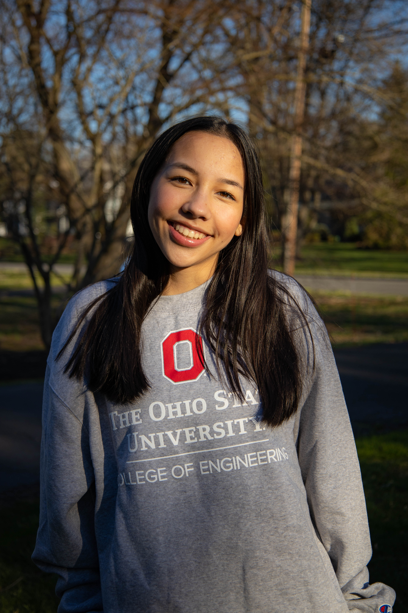
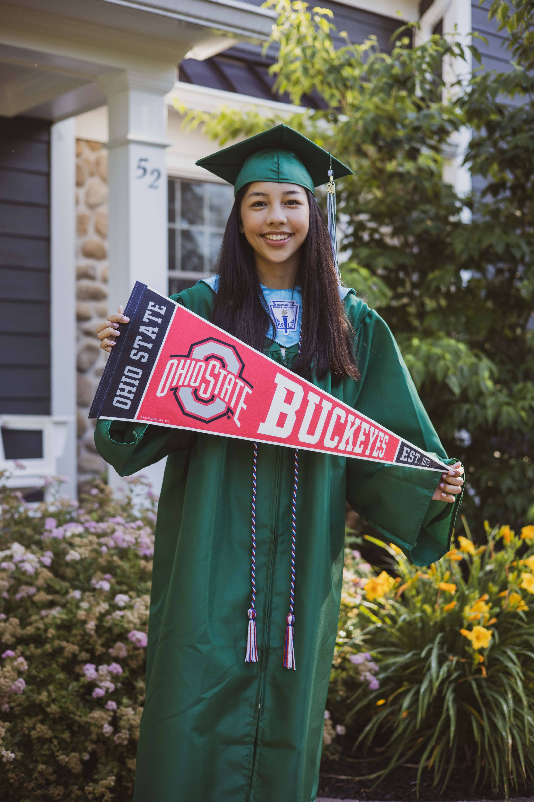
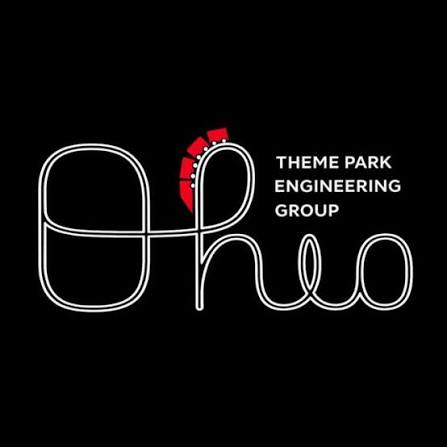
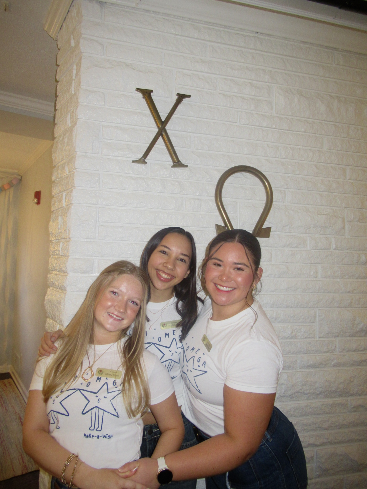
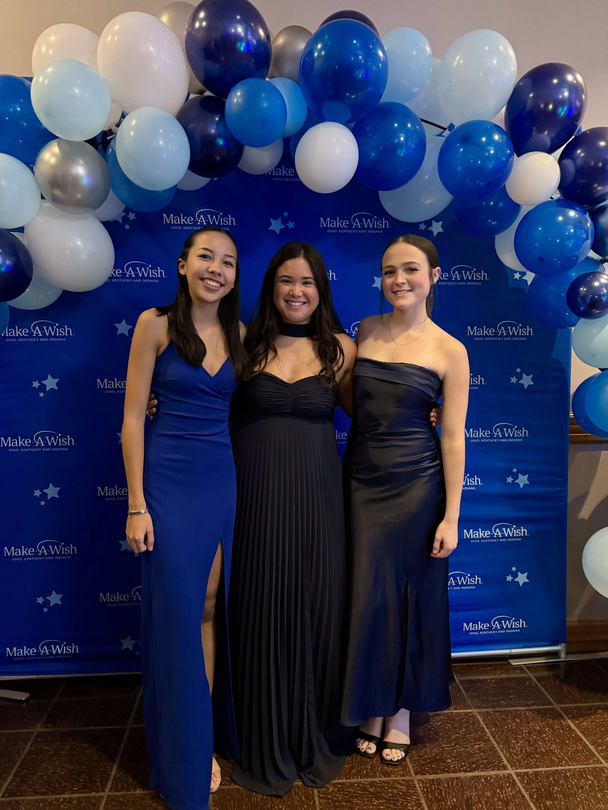
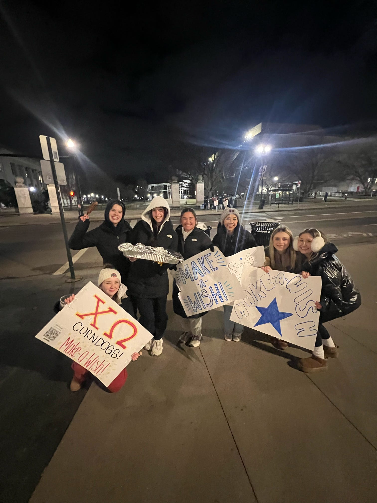

About Me
I’m Kaylin, a Computer Science & Engineering student at The Ohio State University with a minor in Animation. I’ve been interested in programming since high school, and am comfortable working with languages and tools such as Java, Python, C, C#, HTML, and CSS. In my free time, I enjoy drawing, animation, musical theater, and exploring new creative outlets.
Through my coursework, I’ve collaborated on team-based projects, including game development, where I’ve contributed to both the code and the design. I’m passionate about blending technology and the arts, and I’m always looking for opportunities to expand my experience through internships or creative technical projects.
Academics
- School
- The Ohio State University
- Major
- B.S. Computer Science & Engineering
- Minor
- Animation
- CSE Specialization
- Artificial Intelligence
- GPA
- 3.73 / 4.0
- Expected Graduation
- May 2028

Campus Involvement

Theme Park Engineering Group (TPEG)
Member · August 2026 - Present
As a member of Ohio State’s Theme Park Engineering Group, I explore how engineering and technology applies to the themed entertainment industry. I participate in club activities including building a campus haunted house, programming a light show for Light Up the Lake, and attending industry panels with professionals in themed entertainment. These projects and networking opportunities help me gain a better understanding of how engineering can bring creative ideas to life and create memorable guest experiences.

Chi Omega - Zeta Alpha Chapter
Member · January 2025 - Present
As an active member of the Chi Omega Zeta Alpha Chapter, we volunteer to help raise money for the Make-A-Wish foundation. It’s a life changing foundation that grants wishes for kids battling critical illness. Throughout the year, Chi Omega hosts events leading up to our annual Make-A-Wish Gala where in 2025 our chapter was able to raise $72,000 which is 7 wishes!

